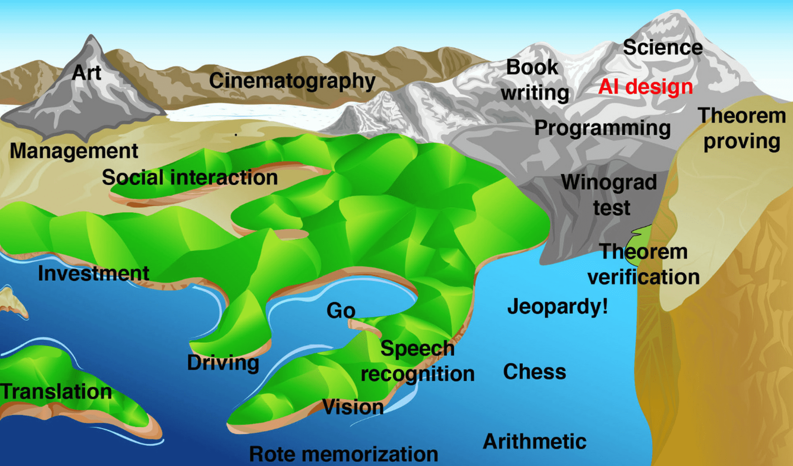
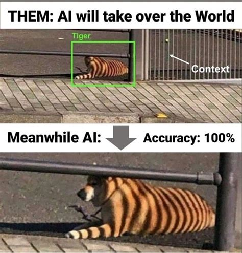

AI taking over human jobs is an age old topic. I am old enough to remember watching Push Button Kitty episode of Tom and Jerry as a kid where Tom gets replaced by a robotic cat.
Fast forward to 2024 and we have, dockworkers concerned about being replaced by autonomous machines, China completing the world’s first fully unmanned paving construction along a 157.79 km stretch of the Beijing-Hong Kong-Macao Expressway and Tyler Perry halting his $800 million studio expansion project after seeing the capabilities of OpenAI’s Sora.
This is a very nuanced topic in itself which partly explains why almost every discussion on this topic can be boiled down to - ‘We Don’t Know’. I have always been curious to understand what is really driving this sentiment which is what the focus of this post is going to be.
I do want to preface by saying most of this stuff may very well be purely speculative and may read like works of science fiction. When it comes to automation and jobs, there are so many what ifs and assumptions that are driving this ‘We Don’t Know’ sentiment. Achieving Artificial General Intelligence (AGI) in our lifetimes is a big if. No one knows for sure if its going to happen or when its going to happen.
Before going into the nitty-gritties, it might be worth taking a step back and understanding what AI in its current state can and can’t do. Something that helped me contextualize this was the concept of ‘Landscape of Human Competence’ that I came across in Max Tegmark’s Life 3.0. Hans Moravec illustrates the potential of AI using the following metaphor:
Computers are universal machines, their potential extends uniformly over a boundless expanse of tasks. Human potentials, on the other hand, are strong in areas long important for survival, but weak in things far removed. Imagine a “landscape of human competence,” having lowlands with labels like “arithmetic” and “rote memorization,” foothills like “theorem proving” and “chess playing,” and high mountain peaks labeled “locomotion,” “hand-eye coordination” and “social interaction.” Advancing computer performance is like water slowly flooding the landscape. A half century ago it began to drown the lowlands, driving out human calculators and record clerks, but leaving most of us dry. Now the flood has reached the foothills, and our outposts there are contemplating retreat. We feel safe on our peaks, but, at the present rate, those too will be submerged within another half century. I propose that we build Arks as that day nears, and adopt a seafaring life!

Put simply when the ‘sea level rises’ up to the peak, in theory we will achieve Artificial General Intelligence. We can see that the tide for capacity has been rising over the past few decades. Computers have been able to do basic arithmetic since mid 20th Century. In 1997, IBM’s Deep Blue chess computer, dethroned chess champion Garry Kasparov. Soon enough, Google’s DeepMind AlphaGo was able to beat Lee Sedol in a five-match game of Go. Today we are seeing breakthroughs in speech recognition, language translation and computer vision problems. There was a time, not too long ago, when the idea of computers doing these seemingly complex tasks seemed impossible. Nick Bostrom explains this in Superintelligence:
There is an important sense, however, in which chess-playing AI turned out to be a lesser triumph than many imagined it would be. It was once supposed, perhaps not unreasonably, that in order for a computer to play chess at grandmaster level, it would have to be endowed with a high degree of general intelligence. One might have thought, for example, that great chess playing requires being able to learn abstract concepts, think cleverly about strategy, compose flexible plans, make a wide range of ingenious logical deductions, and maybe even model one’s opponent’s thinking. Not so. It turned out to be possible to build a perfectly fine chess engine around a special-purpose algorithm. When implemented on the fast processors that became available towards the end of the twentieth century, it produces very strong play. But an AI built like that is narrow. It plays chess; it can do no other.
In other domains, solutions have turned out to be more complicated than initially expected, and progress slower. The computer scientist Donald Knuth was struck that “AI has by now succeeded in doing essentially everything that requires ‘thinking’ but has failed to do most of what people and animals do ‘without thinking’—that, somehow, is much harder!”Analyzing visual scenes, recognizing objects, or controlling a robot’s behavior as it interacts with a natural environment has proved challenging. Nevertheless, a fair amount of progress has been made and continues to be made, aided by steady improvements in hardware.
This phenomenon of reasoning requiring less computational resources and other sensorimotor and perception skills requiring enormous computational resources is known as Moravec’s Paradox. This is where the topic of automation and jobs starts getting nuanced. For starters, it is difficult to identify which tasks can AI do. We take it for granted to be able to analyse visual scenes, recognise objects that are difficult (note difficult, not impossible) for an AI to do. On the flip side, we assume that playing chess and Go would be impossible for an AI to do but as we have already seen, AI has already outsmarted us in these domains. That’s why it is hard to accurately predict which areas AI is going to outsmart us in the future.
Then there is also the AI effect, where the goalposts of real intelligence keeps on moving. Depending on who you ask, people may have different interpretations of what AGI is. Going back to the landscape of tasks, some might argue the sea level of AI capacity is already close to the peak. Critics argue that it is not a given that the sea level will keep on rising and we may never reach a point when computers can do some of the more complicated tasks in the landscape of human competence.

Now the obvious question will be - what do we do about it? There are a couple of high-level observations we can make in the context of AI and automation
There are areas that AI is very good at and there are areas that AI not very good at (as of today). Given the ambiguities in defining ‘real intelligence’, it’s hard to pinpoint exactly what those areas are. Broadly speaking, AI in its current state excels at a narrow subset of highly repetitive or structured actions in a predictable setting. Max Tegmark jokingly remarks in his TED Talk, that the obvious takeaway is to avoid careers at the waterfront of landscape of tasks. In words of Chamath Palihpitiya, ‘’we shouldn’t set up the future generations to compete with computers [in these areas]’’.
There have been some forecasts for when various jobs will get taken over by machines such as the ones by Oxford University, and McKinsey. These forecasts provide a sense of which areas are going to be the most impacted by automation (transportation, logistics, office and administrative and production occupations) are at risk and would require to focus our efforts from a policy-making perspective.
On the flip side, skills like creative problem-solving, empathy, negotiation, social intelligence are going to become valuable.
So far we have focused our discussion on areas that are going to be automated and the difficulties in classifying them in the first place. But there is another, equally important piece in this equation. And it involves ethics.
One could make a case about how automation could be morally justifiable in the case of some of the high risk occupations. Think about how many lives and injuries could be avoided if we have robots doing the grunt work in some of the high risk occupations such as in construction trades?
Civilian occupations with high fatal work injury rates (in the United States). Source: Bureau of Labor Statistics In 2022, almost 44,000 people died in motor vehicle crashes in the United States. That is more than 110 people killed in crashes every day. Now imagine how many lives could be saved if we had self-driving cars. Yes, that would eliminate driving professions such as Uber/Lyft drivers, truck drivers. But would it be justifiable?
What about car enthusiasts; people who like going on long drives in the country side? Should they give up driving too?
What about professions that are not as risky, like animators? Maybe Tyler Perry is right and eventually there will be no need for animators as OpenAI’s Sora will be able to whip up something that far exceeds human capabilities. Or maybe not?
Maybe there is something about human-made creations that resonates with us. I was recently reading The Creative Act by Rick Rubin and he sums it up perfectly:
Flaws are human, and the attraction of art is the humanity held in it. If we were machinelike, the art wouldn’t resonate. It would be soulless.
There are times when I still enjoy the ‘commercialized’ pizza you get at Domino’s. But there is something to be said about the hand-stretched Neapolitan pizza that they serve at the my local pizza joint that is hard to beat. Maybe AI will never be able to recreate those imperfections that resonate with us.
Assuming we reach this point in a distant future where all jobs are automated and there is no need for humans to work. The question now remains - how do we sustain that society? Beyond providing a means to living, jobs provide a purpose and a sense of meaning to many people. A Universal Basic Income (which in itself is a very controversial topic) may take care of an individual’s basic needs such as housing, but how do we replace the sense of belonging and community that is present in jobs?
What if we also consider how ethics may apply to AI itself? What if AI develops a conscience and does not want to be subjected to these grunt work? What do we do then? You might be reading this and wondering, ‘’Aryamik, you have seen too many episodes of Westworld. You need to take a chill-pill.’’
I have to admit this one is something that is hard to wrap my head around. Partly because I have seen some iterations of this unfolding in pop-culture (you guessed it, Westworld). The story is basically the same
Humans deploy robots for their selfish needs.
Robots became self-aware
Robots rebel
Society turns into a dystopian nightmare
It is worth mentioning that in Life 3.0, Max Tegmark warns against the temptation to anthropomorphize AIs and assume that they have typical human-like feelings. Like I said earlier, its not even a given that AI will ever reach that stage in our lifetimes where we will have to think about giving rights to AI. In fact, AI researcher Jeff Hawkins argues in his book On Intelligence that the first machines with AGI will lack emotions by default and as a result it might be possible to design a superintelligence whose enslavement is justified. In fact concepts like consciousness and experiences may not even apply to AGI.
How long will it take until machines can reach a point of consciousness? We clearly don’t know, and need to be open to the possibility that the answer may be “never.” However, we also need to consider the possibility that it will happen, perhaps even in our lifetime.
In short, the technological complexities as well as some of the aforementioned ethical considerations makes automation and jobs such a nuanced topic. It’s worth noting that there are more variables in this conversation that I didn’t cover such as economic considerations, which adds a whole set of complexities.
I will wrap things up by sharing this metaphor from Scottish-American economist Gregory Clark in his book Farewell to Alms:
Imagine two horses looking at an early automobile in the year 1900 and pondering their future.
“I’m worried about technological unemployment.”
“Neigh, neigh, don’t be a Luddite: our ancestors said the same thing when steam engines took our industry jobs and trains took our jobs pulling stage coaches. But we have more jobs than ever today, and they’re better too: I’d much rather pull a light carriage through town than spend all day walking in circles to power a stupid mine-shaft pump.”
“But what if this internal combustion engine thing really takes off?”
“I’m sure there’ll be new new jobs for horses that we haven’t yet imagined. That’s what’s always happened before, like with the invention of the wheel and the plow.”
Are we destined to follow the same fate as the equines? Or will we get the digital utopia we have always yearned for? One thing is for certain: assuming we continue to make developments in AI over the next few decades, its impact on society will keep growing and it will give us fascinating opportunities and challenges.